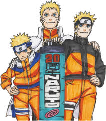

Naruto Uzamaki
The one anime to rule them all!

Naruto is an anime that follows the story of Naruto Uzamaki. He is a young shinobi or ninja of the hidden leaf village. When he was a baby his father sealed an ancient beast called the nine tailed fox inside of him. This battle with the nine tails orphaned Naruto and having the nine tails inside his body ostracized him. The village feared him, not because he was a bad kid but because of the monster sealed away in him. Naruto however didn't let this stop him from advancing and becoming one of the most powerful shinobi.
Sasuke can be considered Naruto's oldest friend. He also is Naruto's biggest rival. In the show sasuke rebels against the hidden leaf village in search for more power. Naruto refuses to let him leave so he tries to stop him with this fight. This is a key turning point for naruto as it gives him the motivation to get stronger to bring back sasuke.
Naruto grows and learns to control his nine tailed fox. He can now harness more of the chakra the fox creates. Orochimaru is an outcast from the village due to his tendencies to do some unauthorized experiments. This clip has less fighting in it but it is a turning point for Naruto. He is becoming stronger yet his control of that power is becoming weaker.
This is one of the grand finale fights. Madara has been scheming from the shadows for a long time. He is confronted by the alliance of shinobi from all villages. This is also when he becomes his final form. Naruto has grown a relationship with the nine tailed fox and is now capable of fighting together with him. Naruto and Saskue finally get to put all their training and struggle to the test against the biggest threat to their world.